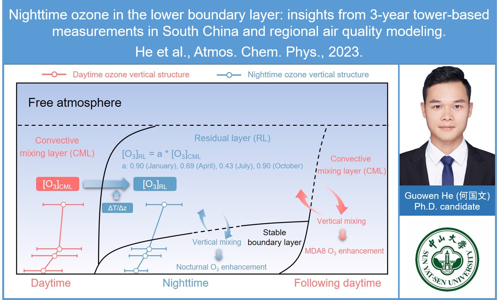
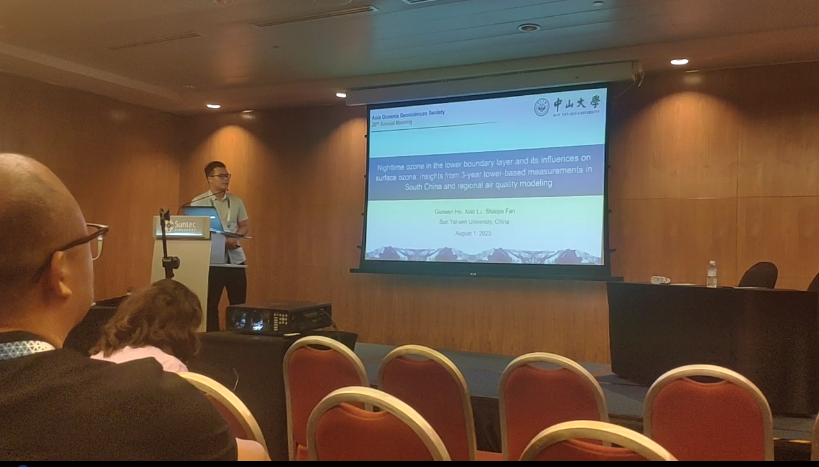
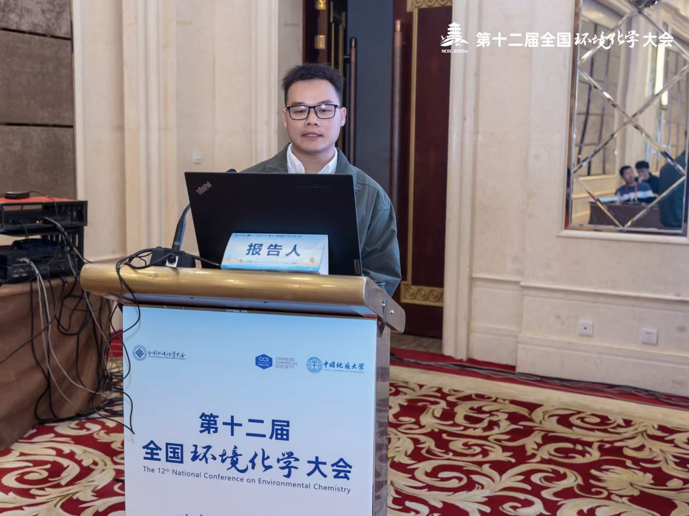
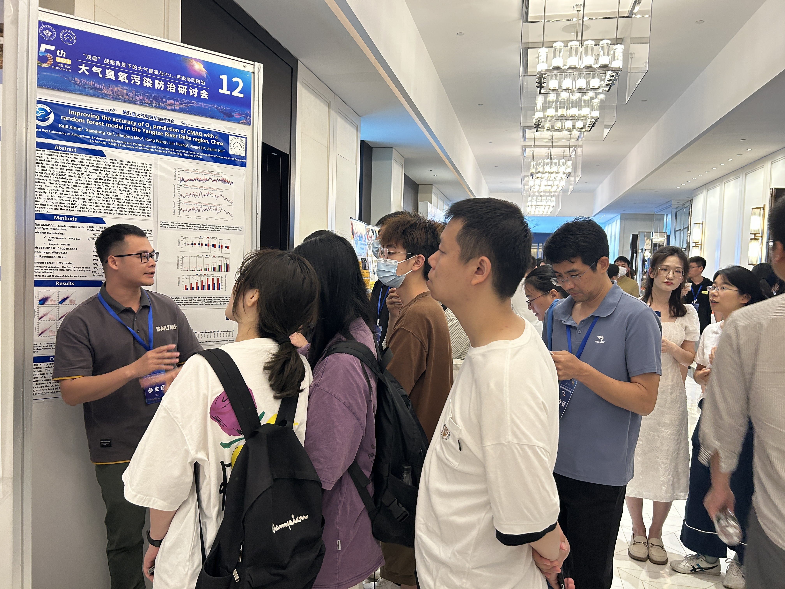
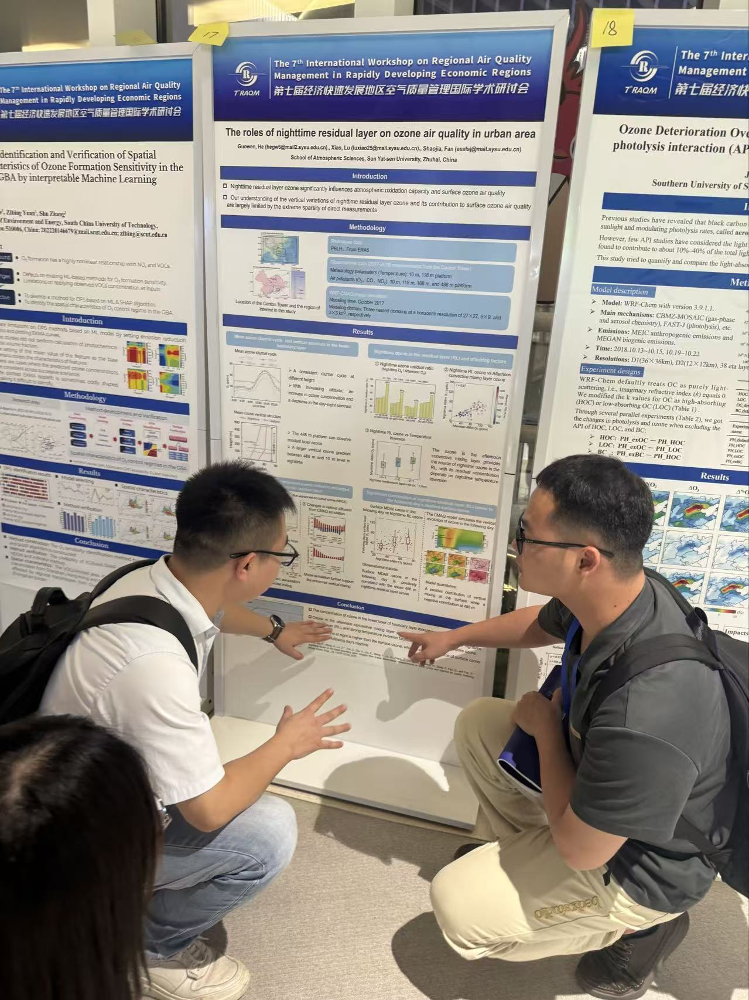
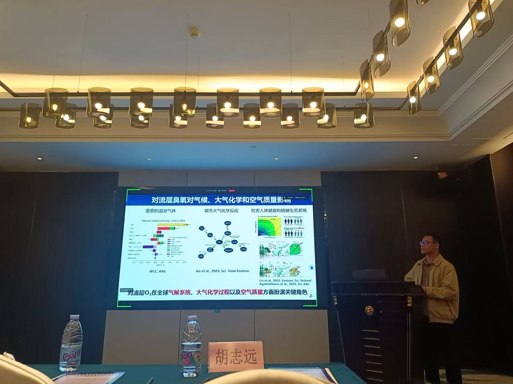
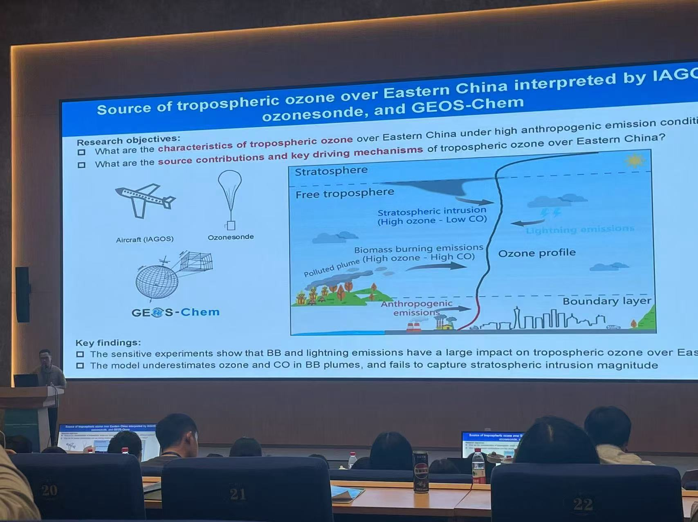
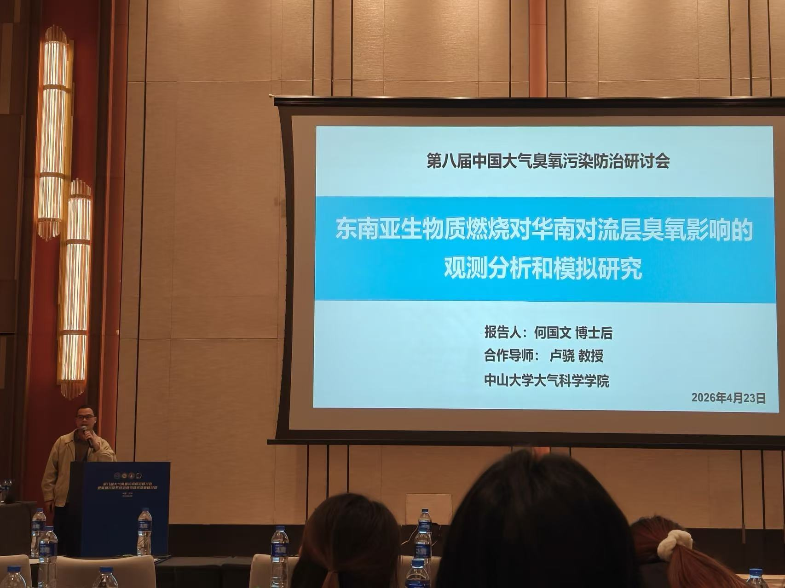
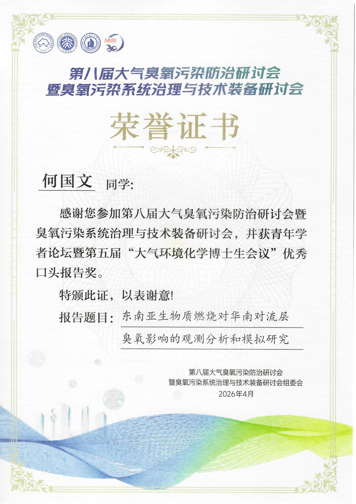

中山大学 大气科学学院
合作导师：卢骁 教授
中山大学 资源与环境
研究方向：对流层臭氧的观测和模拟及来源解析
导师：范绍佳教授、卢骁教授、邓涛研究员（行业导师）
暨南大学 环境科学
导师：吴兑教授、邓涛研究员
肇庆学院 环境工程
Atmospheric Chemistry and Physics, 2023, 23(20): 13107-13124
WOS 引用: 30 次

概念模型示意图
Science of The Total Environment, 2021, 791: 148044
WOS 引用: 48 次
环境科学学报, 2023, 43(1): 87-96
CNKI 引用: 8 次
环境科学学报, 2022, 42(6): 250-259
CNKI 引用: 26 次
中国环境科学, 2020, 40(10): 4265-4274
CNKI 引用: 21 次
Atmospheric Chemistry and Physics, 2025, 25(14): 7991-8028
Atmospheric Environment, 2025, 352: 121207
中国环境科学, 2024, 44(11): 5934-5949
更多合作论文请访问 → ResearchGate 个人主页

新加坡 · 亚洲大洋洲地球科学学会年会

武汉 · 第十二届全国环境化学大会

武汉 · 第五届中国大气臭氧污染防治研讨会

广州 · 第七届经济快速发展地区空气质量管理国际学术研讨会暨首届粤港澳大湾区气候论坛

广州 · 未来地球学术研讨会

南京 · The 2nd GEOS-Chem Asia Meeting

兰州 · 第八届中国大气臭氧污染防治研讨会

中国环境科学学会臭氧专委会优秀报告